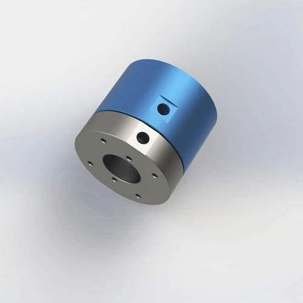

Textile, printing, and converting equipment use rotating rollers, drums, and winding stations where air, vacuum, water, or coolant may need to pass through a moving shaft.
Who this is for: Textile machinery builders, printing press manufacturers, and converting equipment designers specifying rotary transfer for rollers and winding systems.
Printing presses, label machines, laminators, textile winders, and converting lines often need rotating air blow-off, vacuum, or temperature-control transfer.
The right rotary union depends on media, roller speed, bore requirement, seal material, and whether the environment contains lint, dust, ink, or adhesive contamination.

Typical requirementAir, vacuum, water, or coolant transfer for rotating rollers, winding shafts, printing drums, and converting equipment.Separate air, vacuum, water, coolant, and oil requirements before selecting a product family.
Confirm shaft bore, rotation speed, and whether a through-bore layout is needed.
Lint, paper dust, ink, and adhesive residue may require protection or special maintenance planning.
| Machine Area | Common Function | Selection Focus | Begapunk Direction |
|---|---|---|---|
| Printing press roller | Air, vacuum, or cooling transfer | Media compatibility and low leakage | BP-2P or custom |
| Textile winding machine | Air blow-off or shaft actuation | Compact mounting and dust tolerance | BP-1P or BP-2P |
| Paper converting line | Vacuum, cooling, or blow-off | Passage layout and contamination control | BP-2P, BP-3P, or custom |
Send the machine layout, media, pressure, passage count, RPM, port size, and mounting space. Begapunk can review the interface and suggest a suitable standard or custom pneumatic rotary joint.
Yes. They are used when air, vacuum, water, coolant, or other media must pass into rotating rollers or drums.
It can be possible with separated passages, but media, pressure, speed, and seal requirements must be confirmed.